A loader for the landing page, on first load and on day or night
SC-35 · smartclearance.com · three options, each built on the real landing page and recorded from it. Nothing outside the loader changes.
The maintainer's words, 5 Oct 2026:
I want a add a loader to the main landing page, which will show up when the page is loaded or day/night mode is selected. Think of a real aesthetically pleasing loader which would eye catchy
What the page does now
A loader has real work to do here. The town in the hero is a 350 KB plate drawn in depth, and every plate on the page is composed twice, once for day and once for night.
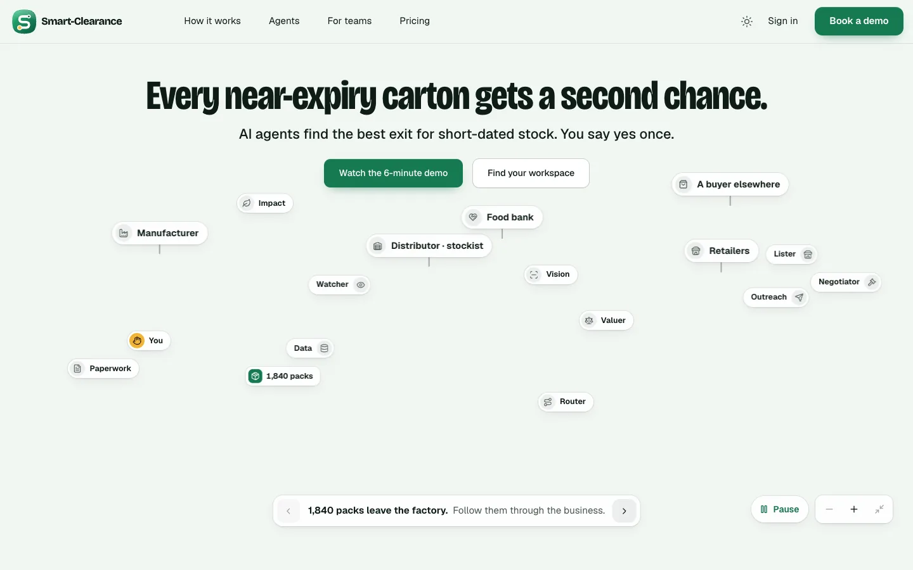
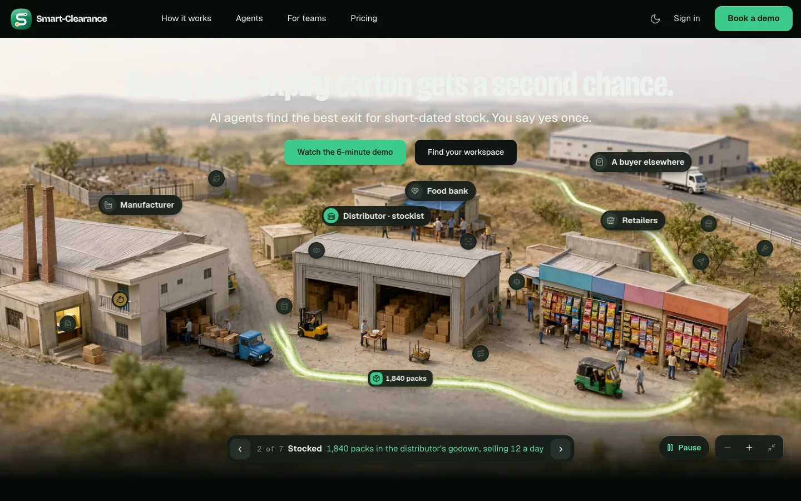
What every option shares
Three loaders
Each mockup is the real landing page with the loader added. To play the loader again, use Replay the load or As on a slow connection (simulated) in its label. To try a switch, use the Appearance menu or the footer. The recordings are from the mockups on a slowed connection (about 6 Mbps): the first load, then Dark, then Light. The switch times are measured on a local server, from the choice to the loader gone.
A · The route
The mark draws its S, from the godown dot towards the pin, as the page loads. When the town is in, the amber pin lands and the mark opens into a window onto the page.
- First load
- The page's own ground and aurora. The squircle springs in, and the route draws with the load, holding its last stretch for the town. Then the pin lands and pings once, and the squircle grows from the mark until it is the whole window.
- A new theme
- The new theme's ground pours out of the control you pressed, in the same squircle. The mark draws while the new plates arrive, then the window opens on the new town.
- Why it works
- The product's sign is a route that ends in the human yes, and here that route is the progress bar. The reveal is the moment people remember: the logo becomes the window onto the town. It is the lightest to build: an SVG mark and one clip-path.
- Trade-off
- While the page loads it is the app's splash in a new place, and the brand mark plays on every theme switch.
- Timing
- a switch about 1.8 scover 0.42 swindow 0.74 s, 0.58 s on a switch
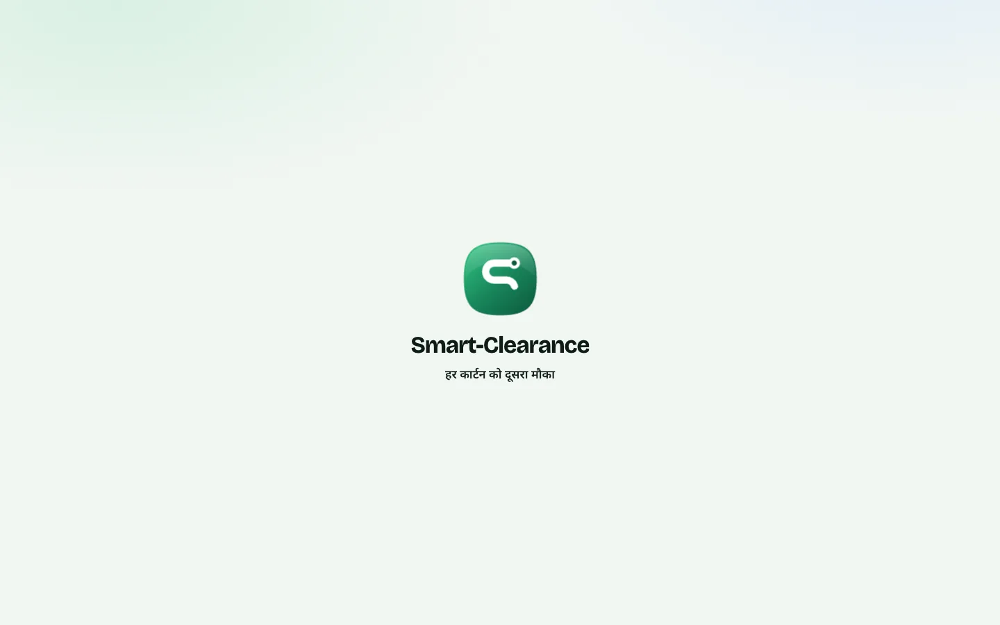
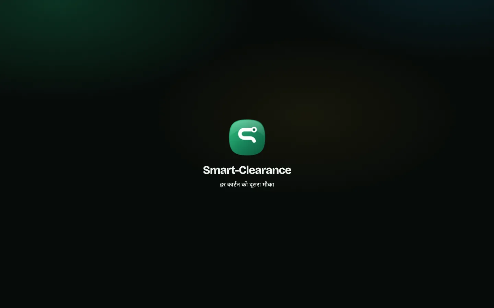
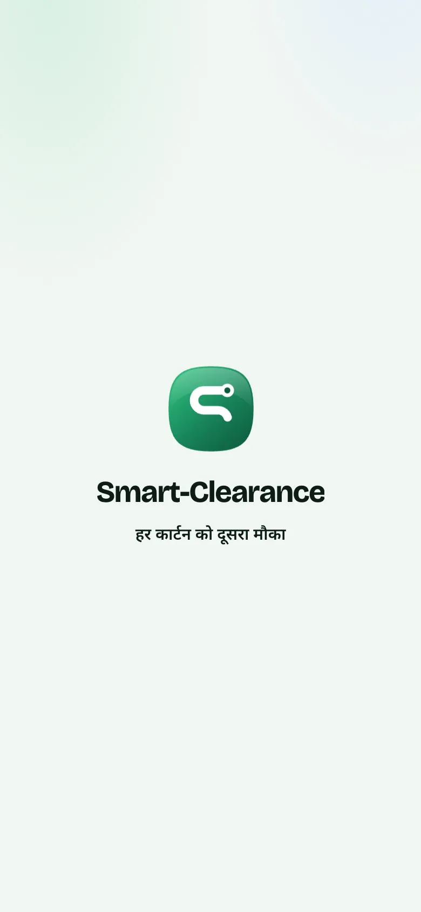
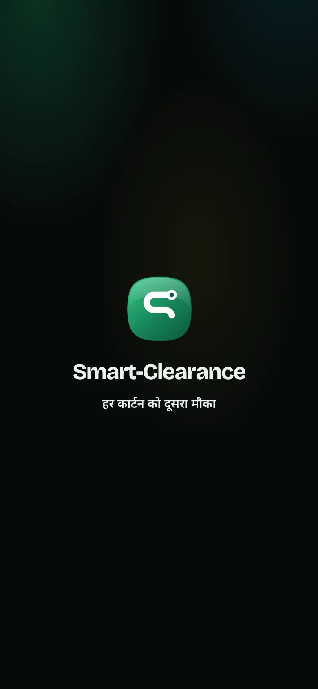
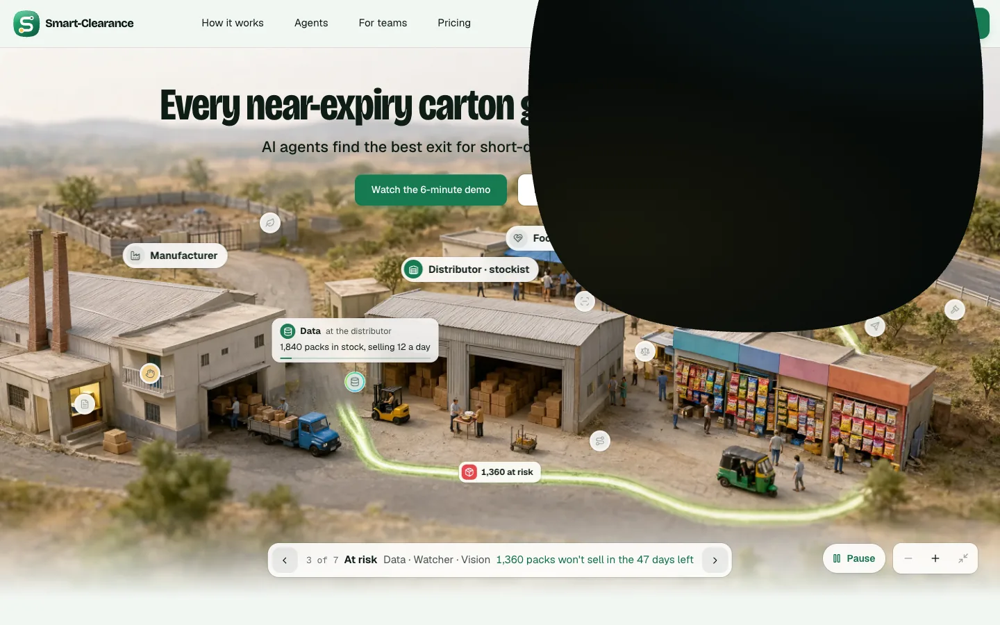
B · Dusk and dawn
The town's skyline, cut from paper in three layers, under a sky that turns with the load. A light page loads as dawn and a dark one as nightfall. Choosing Dark plays dusk, and choosing Light plays dawn.
- The skyline
- It shows the business in the hero: the maker's office, two chimneys and the sawtooth hall, the godown, the food bank, the kirana lane with packets hung in the shops, an auto-rickshaw, the water tank, and the buyer's shed on the far hill.
- Progress is the hour
- Sun and moon climb with the load. At night the windows light one by one, and at dawn they go out. Once the page is in, the layers part as the camera moves into the town, and the sky clears to the page.
- Why it works
- It turns the switch into what it means: night falling on the town. It is the most memorable of the three, and the only one that tells the difference between day and night.
- Trade-off
- It is the slowest switch. It also adds a drawn layer to a page whose material is photographs, so it would need its own entry in DESIGN.md and both compositions kept in step with the plates. Warm skies sit near amber's territory, so they stay muted.
- Timing
- a switch about 2.3 sinto the town 0.78 slayers rise on a new spring: stiffness 220, damping 26, mass 1
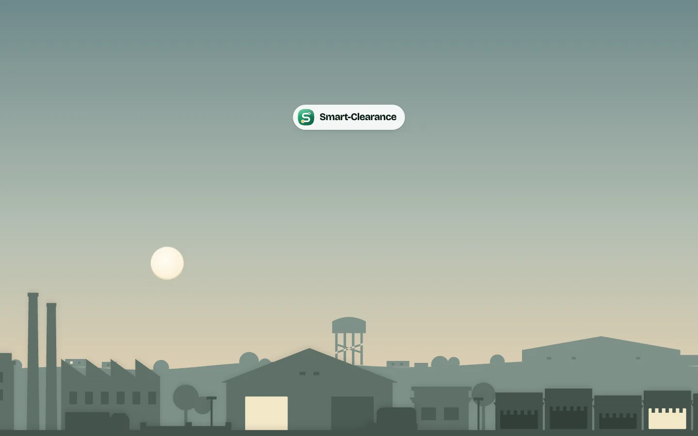
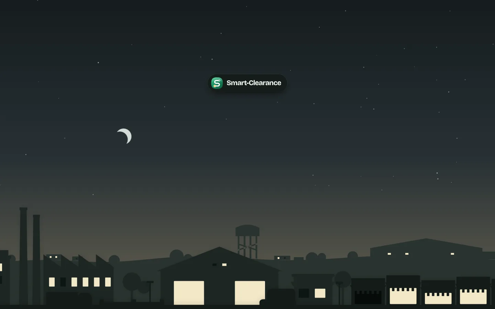
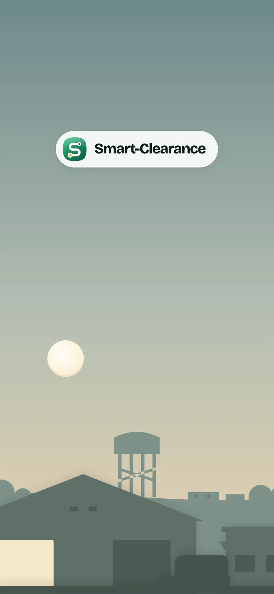
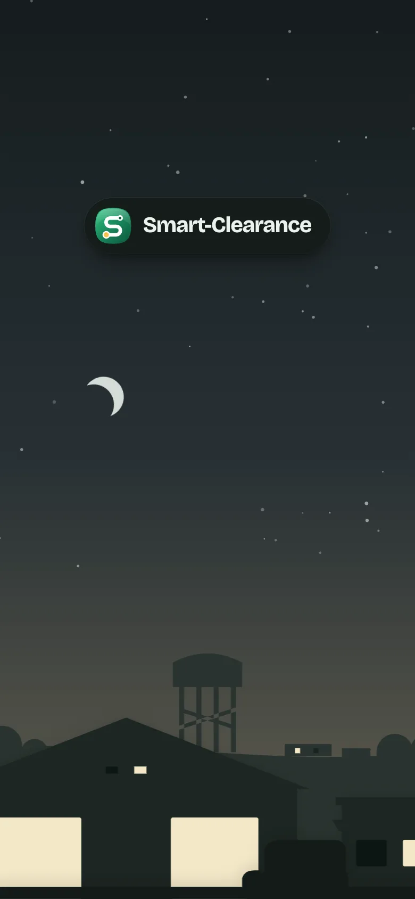
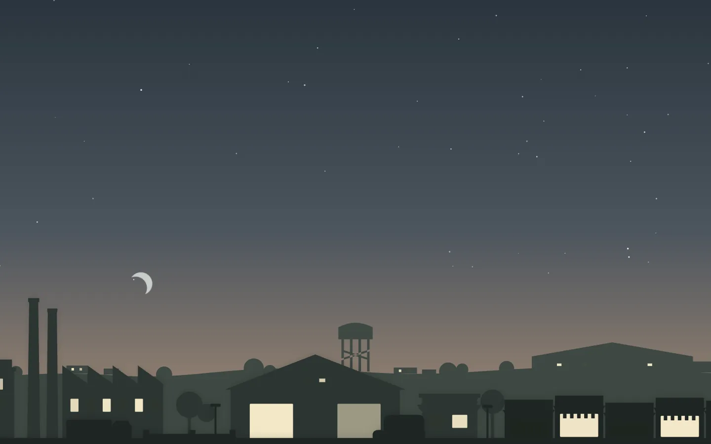
C · The lens
RecommendedA camera's iris over the page. It opens as the page loads, with the page out of focus behind it. When the town is in, the focus point locks, the blades sweep away, and the town comes into focus.
- First load
- Seven blades in the page's own surfaces: white and sage by day, green-black by night, with hairline edges and a soft shade inside the aperture. While it loads, the focus point hunts. Through the aperture you see the real page arriving, out of focus. When the town is drawn, the point locks in Route Green and the blades sweep past the rim. The page comes into focus as they go.
- A new theme
- The shutter closes over the page in the old theme and turns to the new one while shut. It stays shut while the new plates load, then opens on the new town, coming into focus.
- Why we recommend it
- Every plate on this page is a tilt-shift photograph of a miniature, and the hero already keeps its focus on what the camera looks at. The lens carries that language into the loader. It is the quickest switch. On a first load it shows the real page, not a stand-in. It adds no new illustration style.
- Trade-off
- A camera iris is a known gesture; it earns its place here through the focus pull. The blur is on the whole window for about 0.7 s, so it needs a check on a low-end phone.
- Timing
- a switch about 1.5 sshutter 0.38 sopen and focus 0.68 s, 0.58 s on a switch
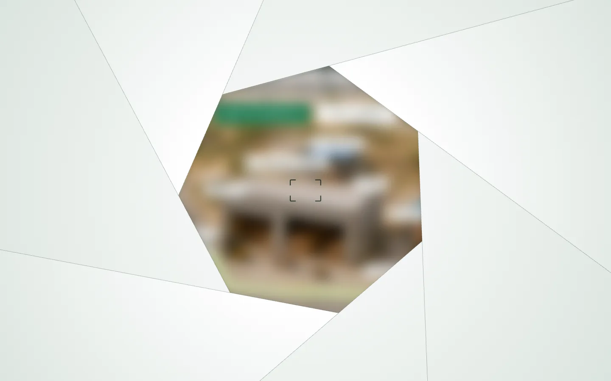
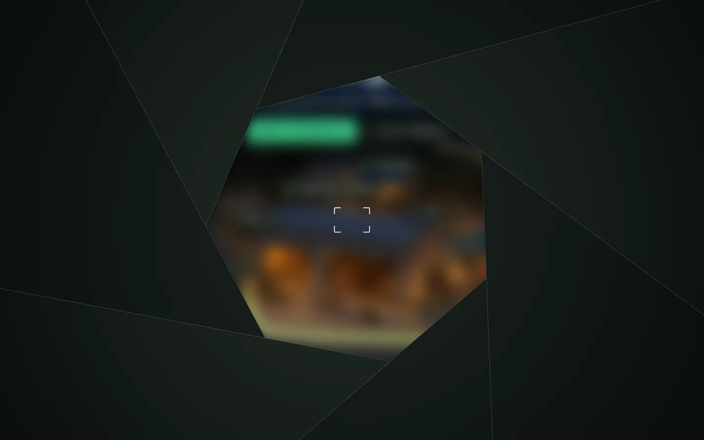
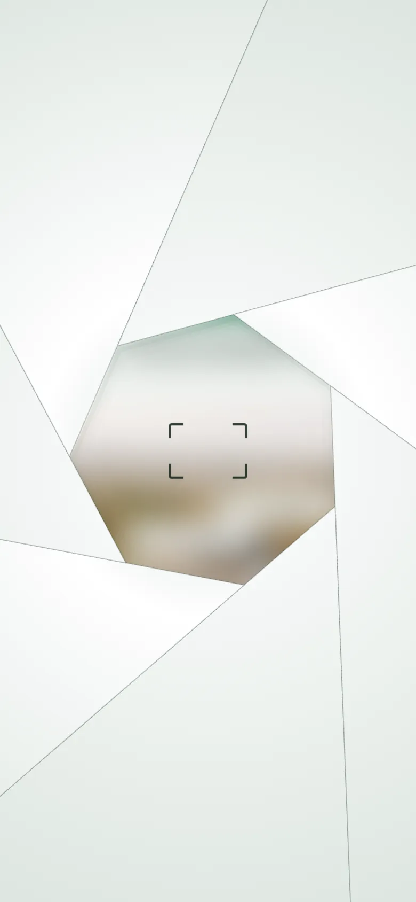
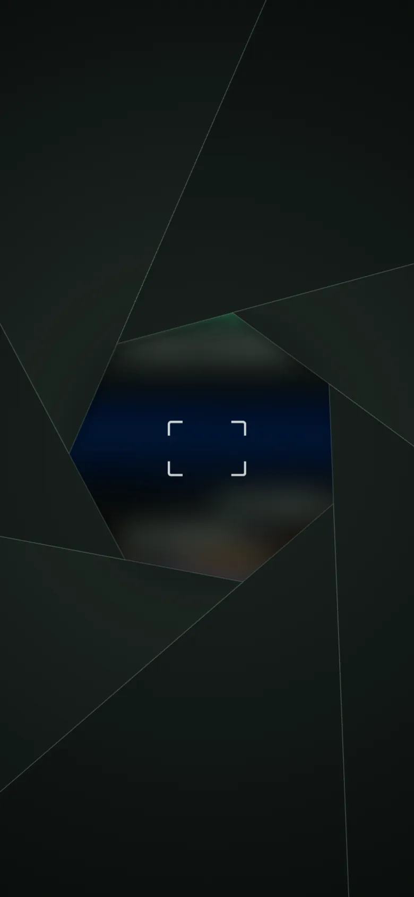
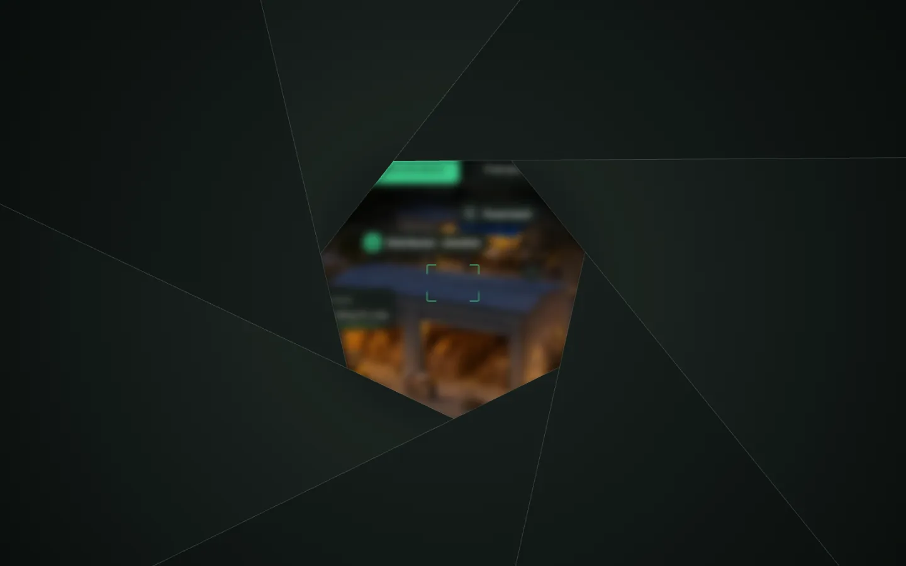
The recommendation
C, the lens. It suits the page's material (photographs of a miniature, with a focus that already follows the camera in the hero). It is the quickest on a theme switch, and it shows the real page as it arrives. B is the one to pick if the switch should feel like nightfall; it costs about half a second more on every switch and a drawn skyline to maintain. A is the simplest to build and keeps the brand mark in front.
What the build would touch
- design3:
- the loader as a plain script and its styles in
site/, at the top of the site page, before React; - a gate in the kit's
ThemeProvider, so a theme change can wait for a cover; - a handshake in
site/town.jsx(its depth map in, its plate drawn, the tour waiting for the lift); - the accessibility suite (the loader's status, a switch by keyboard, reduced motion);
motion.a11y.spec.tsalready allows loading indicators; ./dist.shand the hosted pages re-pinned.
- the loader as a plain script and its styles in
- frontend: the loader's markup and styles in the prerendered page and
app.html; the same gate incore/src/lib/theme.svelte.ts; the handshake inTown.svelte; the e2e and parity suites. - DESIGN.md: the loader recorded under the landing page; B would also add its skyline and sky colours.
Open questions
- Should it play on every visit? The mockups play a shorter version on later visits in the same session.
- Should a click or a key skip the rest of a switch once the new plates are in?
- The loader plays when the device turns to night while the page follows it. Should that be quieter?